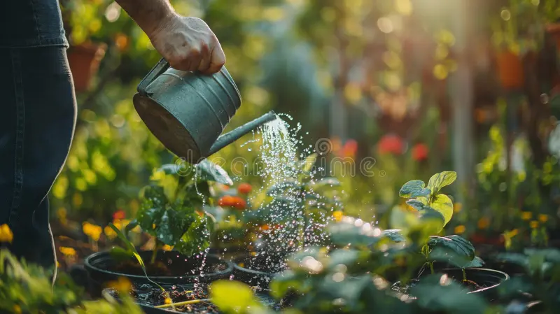

Choose the Right Seeds
Selecting the right seeds is crucial for a successful garden. This guide will help you understand how to choose seeds that are suited for your climate, soil, and gardening goals.
Understand Your Climate
Different plants thrive in different climates. Consider your local climate zone when choosing seeds. Look for varieties that are known to perform well in your region's temperature range, rainfall, and seasonal conditions.
Know Your Soil
Test your soil to determine its type and nutrient content. Some seeds require specific soil conditions to grow well. Choose seeds that are compatible with your soil type, or amend your soil to meet the needs of the seeds you want to plant.
Consider Plant Growth Requirements
Each plant has unique growth requirements, including light, water, and spacing. Research the needs of the plants you're interested in and ensure they align with your garden's conditions and your ability to meet those needs.
Check Seed Quality
High-quality seeds are more likely to germinate and grow into healthy plants. Purchase seeds from reputable sources, and check for freshness and viability. Avoid seeds that are damaged or past their expiration date.
Plan Your Garden Layout
Consider how the plants will fit into your garden layout. Some plants need more space than others, and certain plants may be better suited for specific garden areas. Plan your garden layout to accommodate the needs of each type of seed.